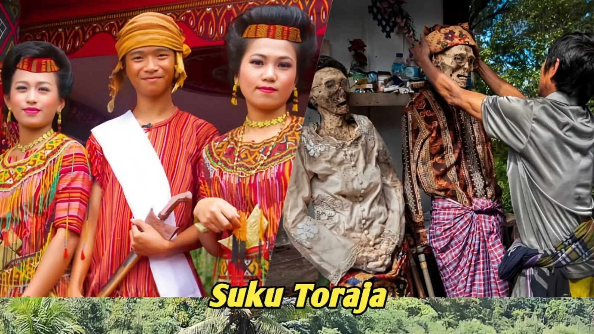
Selamat Datang di Rambu Solo
Rambu Solo adalah upacara pemakaman adat yang sangat penting bagi masyarakat Toraja. Ritual sakral ini menjadi bentuk penghormatan terakhir kepada orang yang telah meninggal, sekaligus mengantarkan arwahnya ke alam roh.
Upacara ini dikenal lewat pertunjukan seni, adu kerbau, dan prosesi pengantaran jenazah — termasuk tradisi Ma'nene (membersihkan dan mengganti pakaian jenazah leluhur) serta Ma'tinggoro Tedong (menyembelih kerbau dengan sekali tebas). Rambu Solo juga mempererat hubungan keluarga dan menjadi identitas budaya Toraja.
Suku Toraja dalam Angka
Suku Toraja menetap di pegunungan utara Sulawesi Selatan dan dikenal lewat budaya uniknya: upacara kematian Rambu Solo, tradisi Ma'nene, dan rumah adat Tongkonan.
Untuk pemahaman yang lebih mendalam, tonton dahulu video berikut: Video Tentang Rambu Solo →
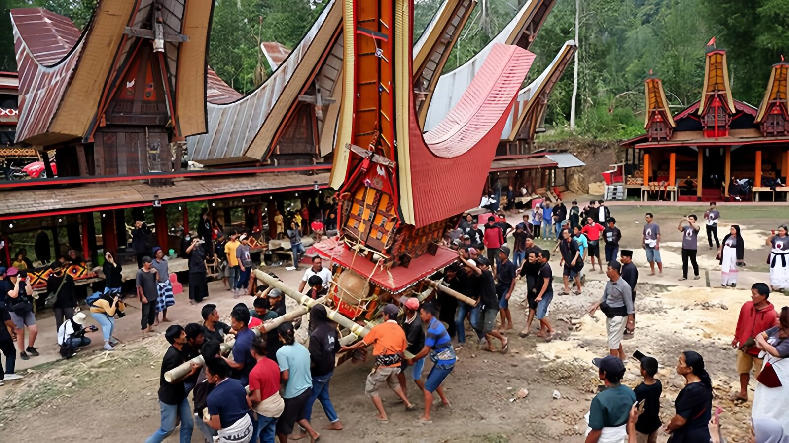
Sejarah dan Makna Rambu Solo
Rambu Solo adalah upacara pemakaman adat masyarakat Toraja yang sudah dilakukan sejak abad ke-9, berasal dari kepercayaan leluhur Aluk To Dolo yang mengatur seluruh aspek kehidupan, termasuk kematian.
| Aspek | Penjelasan |
|---|---|
| Kepercayaan | Aluk To Dolo, kepercayaan leluhur Toraja yang mengatur seluruh aspek kehidupan termasuk kematian. |
| Tujuan | Mengantar roh almarhum menuju puyo (alam baka) sebagai penyempurnaan kematian. |
| Arti "Rambu" | Berarti asap, simbol persembahan yang dinaikkan dalam upacara. |
| Arti "Solo" | Berarti turun, merujuk pada waktu pelaksanaan upacara saat matahari terbenam. |
| Status jenazah | Selama upacara belum dilakukan, orang yang meninggal dianggap belum benar-benar meninggal. |
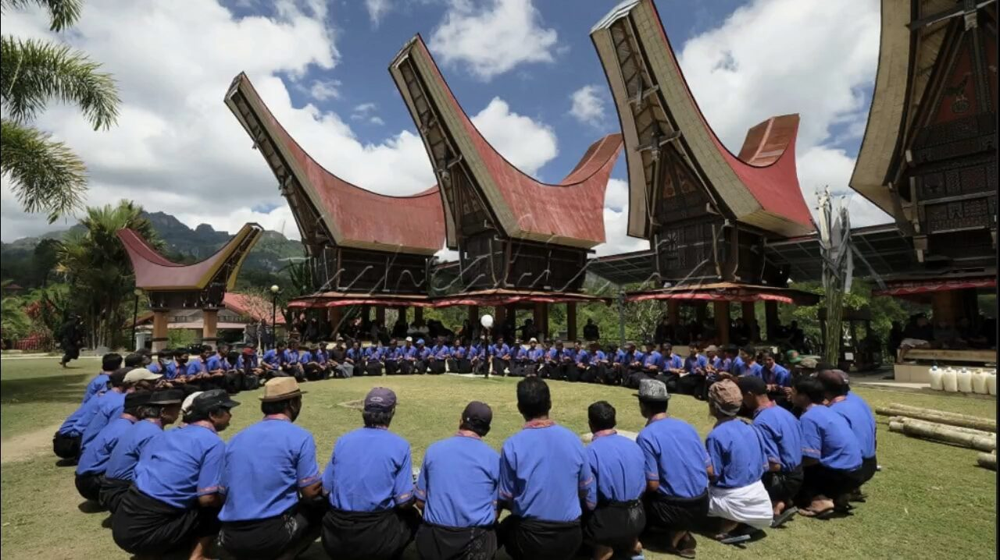
Keunikan Tradisi Kematian Suku Toraja
Lima hal yang membuat tradisi kematian Toraja begitu khas dan dikenal luas.
| Keunikan | Penjelasan |
|---|---|
| Rambu Solo | Upacara kematian besar yang mengantar roh ke alam baka; jenazah diperlakukan seperti orang hidup sampai ritual selesai. |
| Pemakaman tebing | Jenazah dimakamkan di gua batu dengan patung Tau-Tau sebagai penjaga. |
| Ma'nene | Ritual membersihkan dan mengganti pakaian jenazah leluhur sebagai bentuk penghormatan. |
| Pemotongan kerbau | Simbol status sosial keluarga dan penghormatan dalam upacara. |
| Nilai sosial | Memperkuat hubungan sosial antar keluarga dan melestarikan tradisi leluhur. |
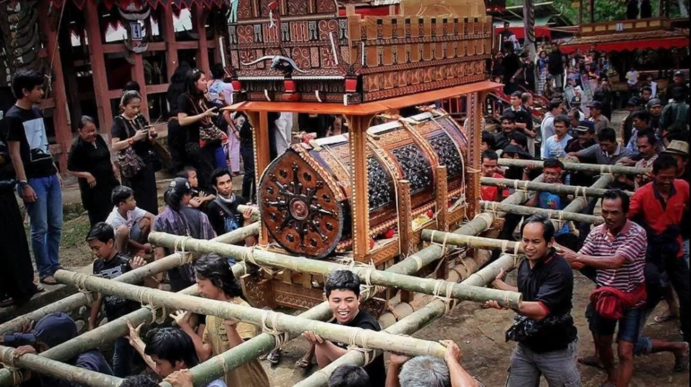
Tradisi dan Pelaksanaan Rambu Solo
Upacara berlangsung 3–7 hari, melibatkan keluarga besar dan seluruh masyarakat sekitar. Berikut tahapan utamanya.
| Tahapan | Rincian | |
|---|---|---|
| 1 | Persiapan jenazah | Pembungkusan dan penghiasan jenazah sebelum prosesi dimulai. |
| 2 | Pemindahan jenazah | Jenazah dipindahkan ke tempat peristirahatan terakhir di gua atau tebing. |
| 3 | Pertunjukan adat | Pertunjukan seni dan ritual adat digelar sepanjang upacara. |
| 4 | Penyembelihan hewan | Kerbau dan babi disembelih sesuai strata sosial keluarga; makin tinggi status, makin banyak hewan kurban. |
| 5 | Puncak acara | Biasanya digelar Juli–Agustus, saat keturunan yang merantau kembali ke kampung halaman untuk mempererat gotong royong keluarga. |
Galeri Foto
Dokumentasi Upacara Rambu Solo.
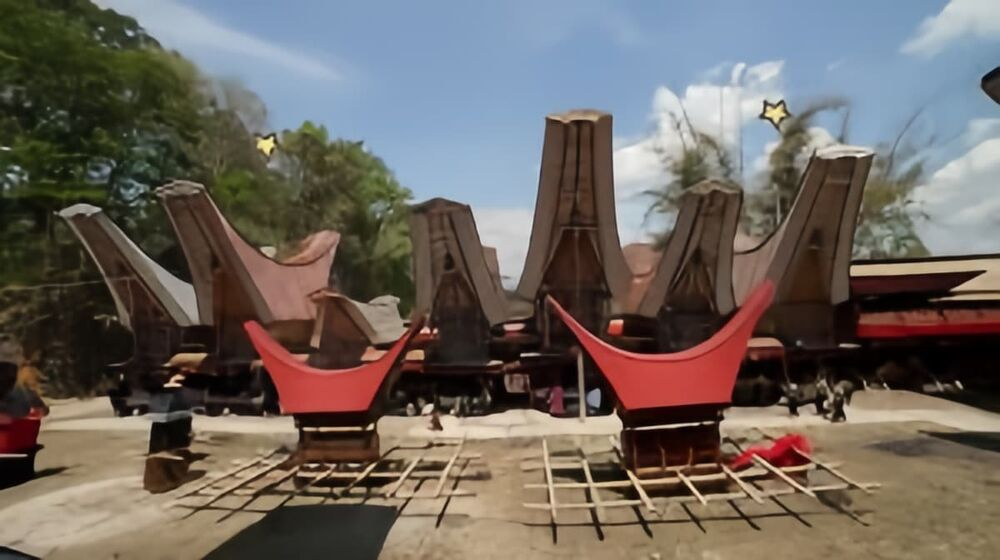
Penyimpanan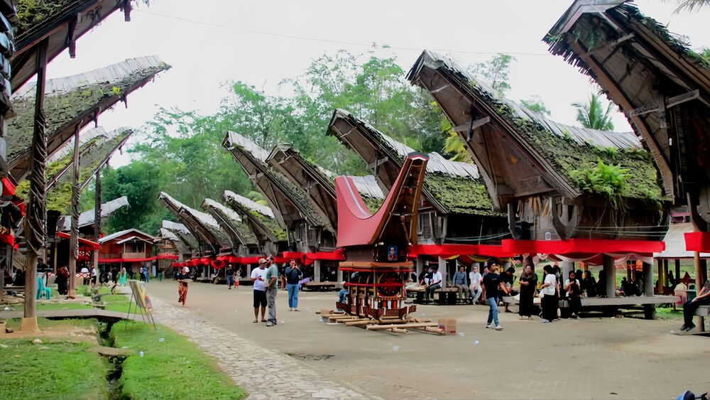
Melingkar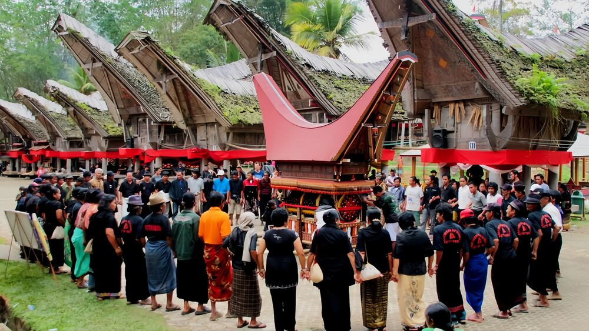
Prosesi kerbau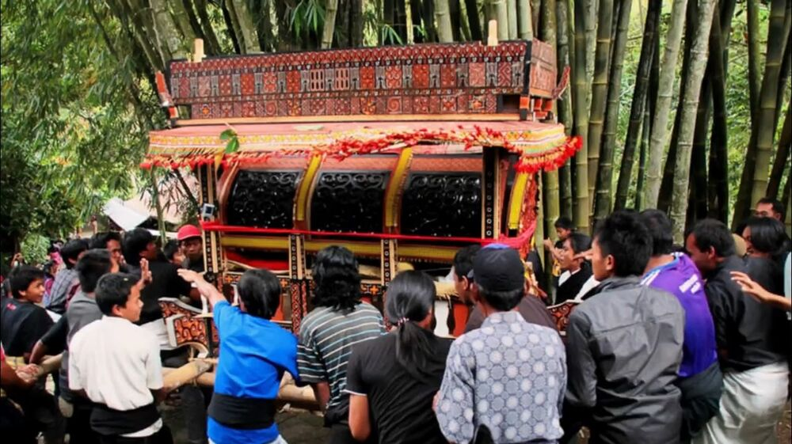
Prosesi kerbau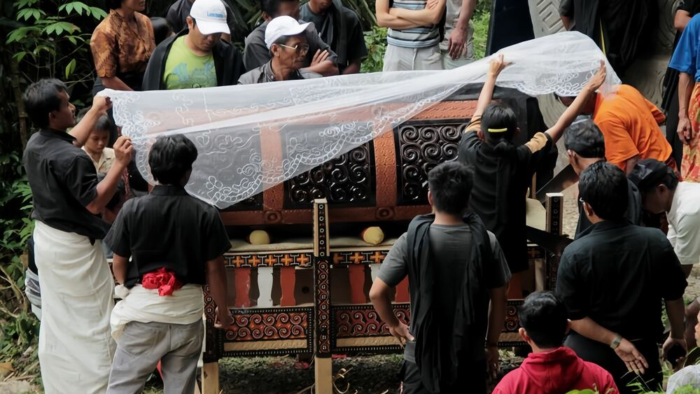
Prosesi kerbau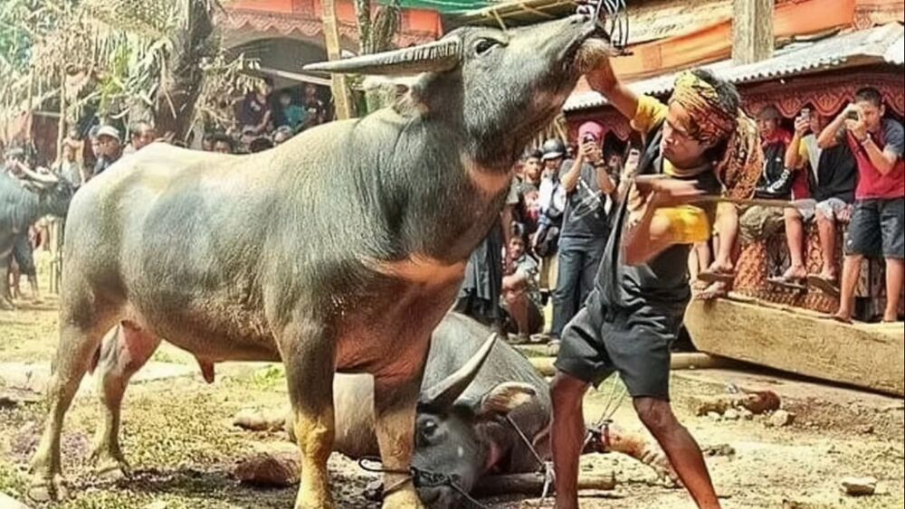
Prosesi kerbau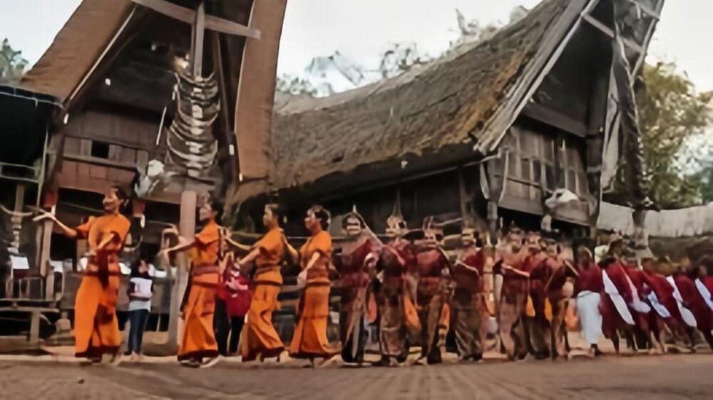
Prosesi kerbau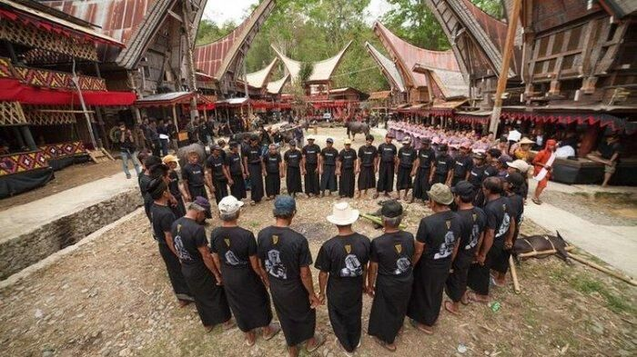
Prosesi kerbau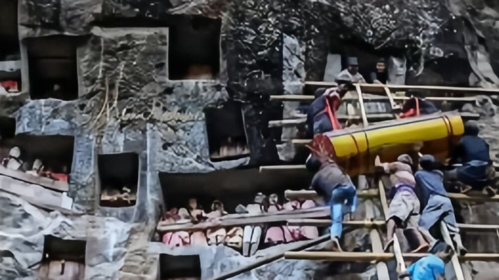
Prosesi kerbau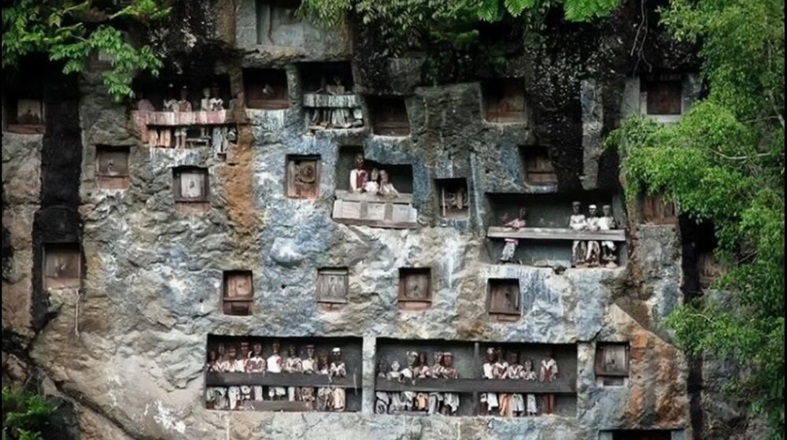
Prosesi kerbau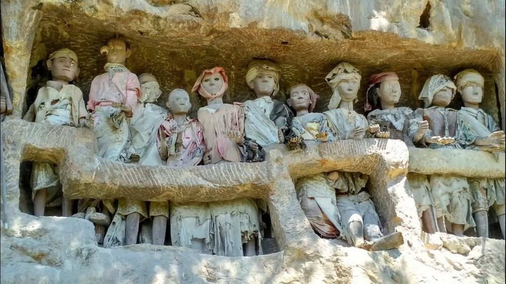
Prosesi kerbauHubungi Kami
Ada pertanyaan atau ingin berkunjung langsung? Hubungi kami lewat salah satu kanal berikut.
| Kanal | Detail |
|---|---|
| Lokasi | Toraja, Sulawesi Selatan |
| 085123637230 | |
| @visittorajautara | |
| YouTube | @Torajaunik |
| info@rambusolo.com |
Punya masukan atau saran soal isi website ini? Kirim lewat halaman Masukan & Saran →